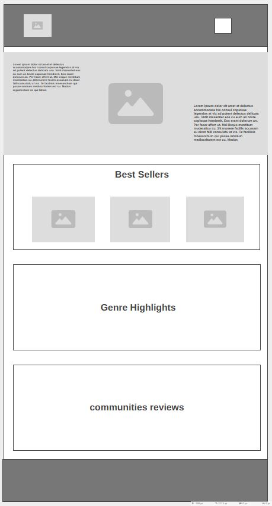
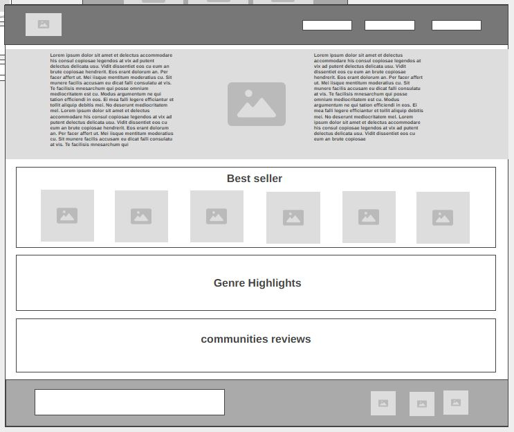

Site Name
Book Haven Gallery – This name represents a warm, welcoming space for book lovers. The word "Gallery" reflects the idea of showcasing books like art in a collection.
Site Purpose
The website provides users with a catalog of books, organized by genres, with a dedicated space to explore literary recommendations, reviews, and community discussions.
Scenarios
- Where can I find the best books in the Fantasy genre?
- How can I connect with other book lovers to discuss recommendations?
Color Schema
- Primary Color: Deep Blue (#3A5BA0) – Used for headers and accents.
- Secondary Color: Soft Beige (#F4EBD9) – Background for a warm reading atmosphere.
Typography
- Font 1: Playfair Display – Used for headings, adding an elegant literary feel.
- Font 2: Open Sans – Used for body text, ensuring readability.
Website Pages & Content
1️⃣ Home Page
- Hero Section – Welcome message & featured books.
- Genre Highlights – Showcase of popular book genres.
- Quote of the Day – A literary quote.
- Navigation – Links to Categories & Contact pages.
2️⃣ Categories Page
- Book Genres – Fiction, Non-Fiction, Fantasy, Sci-Fi, Mystery.
- Top Picks – Community-favorite books per genre.
- Search & Filter – Users can browse by author or year.
3️⃣ Contact Page
- Community Discussion Links – Forums & book clubs.
- Contact Form – Users can send inquiries or join the newsletter.
Wireframe
Below are the wireframe layouts for mobile and desktop views of the homepage.
Mobile View:

Desktop View:
